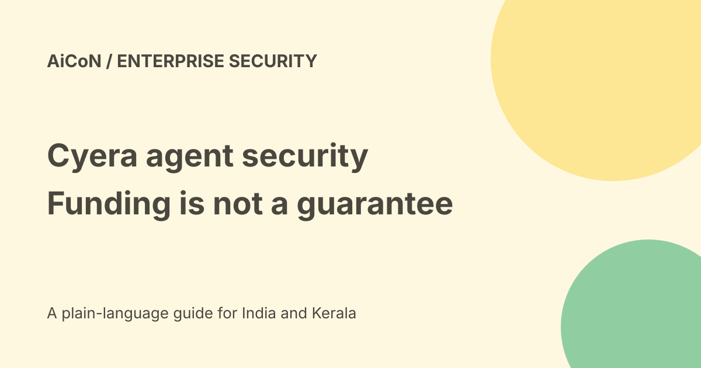

Cyera funding: data, identity and AI-agent oversight
Cyera announced a US$400 million Series G extension from Goldman Sachs Alternatives on 22 September 2026. The money supports its data and identity security platform. Funding is not a product price or proof that every AI-agent risk is solved.

What was announced?
The company says the investment comes from Growth Equity at Goldman Sachs Alternatives and extends the Series G led by Evolution Equity. It describes plans for product development, federal-market work and international growth.
CTech reports the round as an extension, not a new valuation event. Keep the size of a funding round separate from valuation, revenue and a customer's security budget.
Approximate India conversion
At the checked Wise reference of Rs 96.47 per US dollar, US$400 million is about Rs 3,858.8 crore. The archive's roughly Rs 3,540 crore used an older conversion.
This is a present illustrative conversion of a dollar-denominated announcement. It does not establish the rupees actually transferred on the funding date or any Indian service invoice.
What is data plus identity?
Data security asks where sensitive records live and how they are used. Identity security asks which person, program or agent can reach them.
An agent can hold a service identity, call a tool or query a database between receiving a prompt and returning an answer. Watching only the final chat response can miss those intermediate actions.
Agent Guardian and endpoints
The official release describes Agent Guardian and Cyera Endpoint tracking prompts, responses, tool calls, database queries and actions. It names local tools such as Claude Code and Cursor as examples of endpoint activity.
These are the company's capability claims. We did not deploy an endpoint component, check coverage across every application or test whether a risky action was blocked rather than only recorded.
Why the Oasis acquisition matters
The announcement says Oasis Security adds non-human identity management. A non-human identity is an account or credential used by software rather than a person.
Inventorying an identity is not enough by itself. Teams still need to know its permissions, owner, purpose, expiry and whether access can be removed without breaking legitimate work.
Do not turn a slogan into a guarantee
The "first" data-and-identity wording is attributed to the company's announcement and investor statement. We did not independently establish that historical ranking.
Security products can improve visibility without preventing every bad output, stolen credential, mistaken permission or data disclosure. Ask which exact control applies to your workload.
How an organisation can evaluate
- Map sensitive data and the agents that touch it.
- Inventory human and software identities.
- Ask for supported cloud, database and endpoint coverage.
- Separate monitoring from blocking and approval.
- Test a harmless allowed action and a harmless denied action.
- Review alert quality, audit records and remediation.
- Check deployment permissions and data handling.
- Obtain a written quote and contract.
- Keep responsibility for access decisions with your team.
Free, paid and India limits
This is an enterprise platform, not a confirmed free personal app. No public final INR price, universal trial or India-specific hosting contract was verified in the sources used.
No demo was requested and no company data, credentials or device was connected. International expansion plans are not proof of a particular Indian deployment or data-residency option.
What changed since the original post?
We clarify the Series G extension, update the approximate rupee conversion and separate product monitoring claims from demonstrated enforcement. The guide avoids treating funding as a security certification.
Frequently asked questions
Does funding prove the product is safe?
No. Funding and tested controls are different evidence.
Is every agent automatically covered?
Exact supported integration coverage needs verification.
Is a free personal plan confirmed?
No.
Sources: Cyera official funding announcement · CTech funding coverage · Approximate USD/INR reference. Checked 7 October 2026.